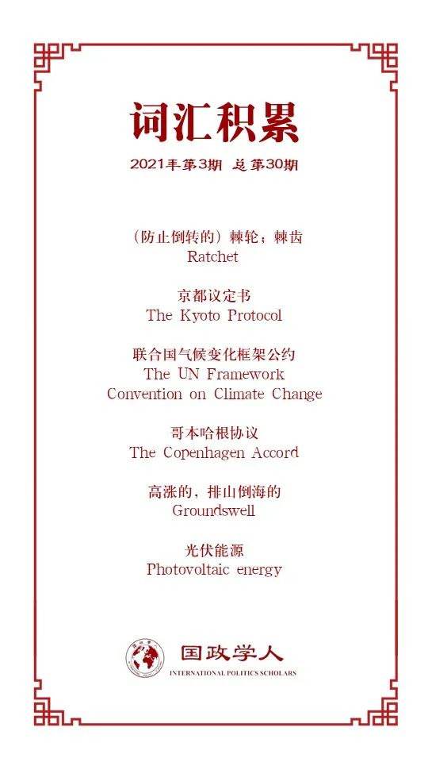

收录于合集

作品简介
【作者】 Robert Falkner，现任伦敦政治经济学院国际关系学副教授、格兰瑟姆气候变化与环境研究所（Grantham Research Institute on Climate Change and the Environment）主任，曾任《欧洲国际关系杂志》副主编，研究领域主要包括全球环境治理和国际政治经济学，重点关注气候政策和商业在国际关系中的作用。
【编译】 王嘉许（国政学人编译员，复旦大学国际政治系）
【校对】 扎西旺姆
【审核】 谢菁
【排版】 秦子宁
【美编 】杜丛竹
【来源】 Robert Falkner, The Paris Agreement and the new logic of international climate politics, International Affairs, Volume 92, Issue 5, September 2016, Pages 1107–1125, https://doi.org/10.1111/1468-2346.12708
【归档】 《国际关系前沿》2021年第3期，总第30期。
期刊简介
《国际事务》是国际关系领域的一流学术期刊，也是多学科综合性学术期刊。本刊于1992年由伦敦皇家国际事务研究所查塔姆学院(Chatham House)创立，内容来源广泛，力图囊括业内专家、学术新秀对重点、热点问题的最新思考。2019年期刊影响因子为3.705，在95个国际关系类刊物中位列第4名。
巴黎气候协定与国际气候治理
The Paris Agreement and
the new logic of international climate politics
Robert Falkner
内容提要
本文第一部分回顾了2009年哥本哈根峰会至2015年巴黎气候变化大会之间全球气候治理的变革，第二部分介绍巴黎气候协定的主要构成，第三部分解释巴黎气候协定获得成功的原因及其不足，第四部分总结并展望下一阶段的国际气候治理。
关键词： 气候治理，巴黎气候协定
文章导读
本文评估了联合国气候变化框架公约（UNFCCC）第21次峰会的成果，认为其达成的巴黎气候协定扭转了此前长达20年的谈判僵局，在国际气候治理领域中实现了突破。巴黎气候协定承认了国内政治在气候变化中的首要地位，并允许国家设置自己的减排目标，创造了一个具有自主性、灵活性的框架，让各国的气候政策接受国际检验，以期通过“点名批评”(naming and shaming)的方式提升全球减排积极性。
在意识到没有任何一个大国可以被强制要求进行减排后，巴黎气候协定回避了京都会议中出现的问题，成功消除了国际气候治理合作的最大阻碍。同时，它并没有将气候治理彻底变成一个自下而上的行动，而是将成员国的减排承诺纳入了大国带动小国的“齿轮机制”(ratchet mechanism)中。考虑到各国政府过去夸大气候治理政策、实质行动有限的情况，巴黎气候协定还引入了“承诺与审查”机制(pledge and review)，与“齿轮机制”一起带动国内国际力量，从而形成更具实质性的气候治理合作。
01
从哥本哈根到巴黎：变革中的气候治理
为实现将平均气温上升控制在2℃内的目标，全球需要大幅下调现阶段的温室气体（GHG）排放水平，从2014年的52.7千兆吨下调至2025年的48千兆吨，到2030年则需要降低至42千兆吨。二氧化碳排放量则需要在2060年至2075年间实现净零能耗。这种对全球经济的“脱碳”将重塑整个现代工业体系，也对政治合作提出了极高的要求。尽管所有主要排放国都已经承诺对气候变暖采取措施，但国际合作仍然阻碍重重。
其一，减排在短期内需要巨额投资，而气候治理的成效则需要在长期才能得到体现。因此，各国政府，尤其是那些选举周期较短的政府，将很难对选民解释其高昂的财政支出。
其二，气候变化对各个国家产生的影响并不相同，这也使得成员国政府很难衡量他们的国家利益。 因此对大部分国家来说，最合理的方式是先观望一段时间，再采取行动。同时，即使一些排放国愿意采取减排措施，他们也无法确定其他排放国一定会给予回报，减少自身的排放量来惠及全球必然会带来极强的“搭便车”效应，使得国际合作难以达成。发展中国家与发达国家之间关于减排分配的分歧也使得气候治理更为复杂。
针对上述问题，国际社会曾尝试通过创设气候制度和强制性的减排目标，在排放国之间建立信任，减少搭便车的可能性。1997年的京都议定书就曾尝试过通过这种方式设立相对温和的减排目标，要求工业国相较于1990年减少5%的排放。但是，京都议定书没能对发展中国家和发达国家做出区分，也因此造成了严重的“差异化”，导致发展中国家可以无限期地推迟减排行动。因此，国际社会期待着2009年的哥本哈根峰会能够吸纳更多国家，却事与愿违。主要原因包括以下三个：
第一，哥本哈根峰会设定的减排目标太过于僵化，没有能激发各国推动经济“脱碳”的积极性。
第二，成员国在为2012年之后的减排设定新目标时无法达成一致。这是由于一个具有法律约束力的目标会把气候谈判变为关于减排负担的分配冲突。那些在履行京都议定书时就已经遇到困难的国家，往往不愿意再为了一个固定的目标而努力。
第三，“附加议定书一”所列名单以内和以外的国家之间存在巨大分歧，使得新兴经济体不愿意让自身经济发展受到减排目标的限制。
因此，在政府间合作以外，地区发展也是理解国际气候治理的关键。自哥本哈根峰会召开以来，高涨的民间热情已经使得气候问题被纳入了国内政治议程中。这些自下而上的行动通过跨国网络结合到了一起，并通过该网络调节自身的行动，在全球范围内推动气候治理，直接影响着主要排放国的政策制定，使其愿意加入国际合作。同时，技术的进步也使得各国向低碳经济转型的成本有所降低。这些国内政治和经济的变化共同为2015年巴黎气候协定的达成提供了动力。
02
**
**
涅槃重生：2015年巴黎气候协定
经历了2009年哥本哈根峰会的失败之后，各国在参与COP-21峰会时都有了更明确的目标和达成决议的决心。除了东道国巧妙的外交手段之外，巴黎气候协定成功的关键还在于一个自主决定、自下而上的承诺机制。
在改变了京都议定书“自上而下”的分配制度之后，此前阻碍谈判进程的主要排放国开始愿意公开支持新协定。 随着中美这两个排放大国率先达成双边协议，其他主要排放国也纷纷做出了自己的承诺，因为没有任何一个国家会愿意被排除在外。“自主承诺”机制的好处在于，各国可以随着实际进程的变化进一步提升减排目标。例如，协定文本仅要求成员国“把全球平均气温升幅控制在工业化前水平以上低于2°C之内”，但经过太平洋岛国和民间组织的共同要求，协定新加入了“努力将气温升幅限制在工业化前水平以上1.5°C之内”的条款，超越了此前达成的目标。
更重要的是，巴黎气候协定相比于京都议定书，还包含了一个长期的减排预期。 协定第4（1）款表示“缔约方旨在尽快达到温室气体排放的全球峰值”，并“在平等的基础上，在本世纪下半叶实现温室气体源的人为排放与汇的清除之间的平衡”，对全球市场发出了重要信号。为实现这些长期目标，巴黎气候协定要求各成员国定期提交自己的承诺，也就是所谓的“自主贡献额”。与京都议定书的分配冲突不同，巴黎气候协定仅要求成员国每5年提交一次“自主贡献额”，并希望每一次新的贡献都可以超过此前的水平，从而提升整体的减排目标。
对减排目标的提升主要依赖对实际减排进展的定期评估。第一次中期评估定于2018年，在协议生效前就将举行，而第一次正式评估将与2023年召开，之后每五年开展一次，评估的结果将在成员国提交新的“自主贡献额”时为其提供参考，从而“促进和强化”他们的承诺意愿。通过建立一个强制各国进行汇报的机制，巴黎气候协定将透明化作为管理的关键，目标在于让各成员国建立信任，使其能够审查各国对其承诺的履行情况。
巴黎气候协定的另一大突破是它在保留发达国家和发展中国家差异、确保对发展中国家提供支持的情况下，将所有国家都纳入了减排进程中。协定第4（4）款要求，“发达国家缔约方应继续带头，努力实现全经济绝对减排目标。发展中国家缔约方应当继续加强它们的减缓努力，应鼓励它们根据不同的国情，逐渐实现全经济绝对减排或限排目标”。而各国可以依据自己的实际经济情况，在“加强减缓努力”和“实现全经济绝对减排目标”之间选择自己的“自主贡献额”，对于投入额并没有给出具有法律约束力的规定。上述条款，加之起草者对协议文本用词的斟酌，巴黎气候协定做到了透明、非对抗和非惩罚性，不会给成员国带来任何违反国际法和受到制裁的风险。自此，巴黎气候协定的广泛性与灵活性已经无可质疑，只剩下最为关键的问题：巴黎气候协定如何才能激发成员国们采取更宏大、更有效的减排努力？
03
国内驱动的气候变化应对行动能否有效？
气候治理的关键并不是快速解决碳排放问题，而是在长期实现经济与技术转型。因此，只要巴黎气候协定可以推动全球向低碳经济转型，该协定就可以算作是成功的。
巴黎气候协定其实并没有“发明”出一种气候治理的新方式，而是将现有的、国内驱动的气候政策体系合理化，使其被国际社会接纳。 在京都议定书逐渐失去支持之后，大多数的主要排放国仍然加强了国内政策来控制排放。这表明国家采取的行动优先反映了国内，而不是国际的需求。因此，从某次程度上来说，协定只是为各国政府执行其自身所需的“贡献额”提供了一个机会，而应对气候变化本就是世界各国公共政策中不可或缺的部分。几乎所有的主要排放国都制定了有关排放控制、能效标准、林业管理和低碳技术创新的法律和条例，而巴黎气候协定遵循了这种高涨的国内趋势，为其提供了国际平台。正如Keohane和Oppenheimer所说的那样，巴黎气候协定旨在创造一种“双层博弈”(two- level game)，将国内气候问题与国家之间的战略联系起来。通过将国内减排承诺纳入国际审查机制，协定确保了用国际政策来协调所需行动水平与国家现有措施之间的差距。由此，巴黎气候协定就将一个分散的、自下而上的政策制定方式转变为了自下而上与自上而下相结合的混合系统。
为使这种系统行之有效，协定需要建立一个透明的审查制度，使各国政策具有可比性。透明度是使得国家承诺可信，以及在主要排放国之间建立信任的关键。在这方面，巴黎气候协定还不够完善。 虽然协定制定了成员国定期提交报告的原则，但它没有提供具体的规则来对这些报告进行进一步的审查与核实 。 正式且透明的审查规则可以对那些低于国际预期的国家进行“点名批评”，从而加强其履行承诺的动力。在理想的情况下，这种机制可以敦促落后的国家提升其气候治理水平，创造一个信任与合作相互加强的良性循环。当然，也不排除这种审查会发现各国的执行与承诺之间都存在很大的差距，造成信任削弱与目标降低的恶性循环。
对国家进行“点名批评”是国际合作中的常用手段，但其成效取决于两方面的因素：其一，该国政府是否在意国际指责和名誉受损；其二，未能达到国际预期国家的数量。主要排放国在某些情况下可能宁愿让国际声誉受损，也要优先考虑国内经济，甚至会挑战国际公认的、具有法律效力的减排协议。巴黎气候协定因此让这些国家自己制定目标并对其负责，从而试图加强大多数国家的责任感，但这种责任感能否超越国家利益还有待考察。
巴黎气候协定的另一个主要机制是公民社会的“点名批评”。 在汇报排放量和国际承诺执行情况时，各国政府还面临着环境保护团体和媒体的审查。但是，这些非国家行为体对各国政府施加压力的能力极不平衡，完全取决于该组织的实力与该国的政治环境，无法对所有成员国起到相同的监督作用。
最后，鉴于全球经济“脱碳”将最终取决于经济行为体的行动，协定与全球市场的互动也十分关键。《巴黎气候协定》可以通过三种方式塑造企业的商业决策：向市场发出关于国际社会长期政治目标的信号；建立治理机制，为低碳商业决策提供激励；鼓励和支持个人的努力。然而，协定缺少关于实现碳中和的具体时间与途径，没有明确如何实现“减少碳排放的国际转让”，在未来的缔约方会议中还需要进一步细化。但总而言之，巴黎气候协定已经成为了一个催化剂，促成了一系列广泛的自愿倡议，其协调与治理能力远远超过了传统治理的范围。
04
总结
巴黎气候大会的成果无疑是国际气候合作的最大突破。《巴黎气候协定》采取的新监管方式成功地将先前具有法律约束力、但存在分配冲突的成果转化为了自下而上的自愿性减排承诺。通过允许各国自主确定其减排进程，协定消除了谈判的最大阻碍。与此同时，新的气候条约要求排放国定期汇报其执行情况并加以审查，为后续加强减排造势。通过这种方式，协定希望创造一种“软互惠”，通过为牵头国家设置更高的目标，来鼓励其他国家加强减排政策。在国家减排承诺不具有法律约束力且无法强制执行的情况下，国际气候治理的途径将主要包括政治领导、财政援助和道德劝说。
巴黎气候协定能否真正减少全球碳排放、推动“顽固国家”提高减排水平还有待检验，而这主要取决于每五年一次的审查能否落实。 为此，缔约国需要强化该审查框架的透明度和执行力。在各国自主决定气候政策的前提下，协定的落实很大程度上取决于气候治理的领导者，即，那些具有更高减排目标的国家，是否愿意提高政策水平、投资绿色技术、朝着低碳经济发展。国家通过自愿原则构成的小集团(coalitions of the willing)或“气候俱乐部”(climate clubs)，可以建立碳交易计划或推动技术转让，而跨国企业和非政府组织等非国家行为体，也可以通过跨国行动和自愿合作实施减排战略。《巴黎气候协定》仍有潜在的发展空间。作为全球治理中的突破性事件，它并没有“解决”，也不希望“解决”气候问题。协定的达成表明国际气候多边外交终于开始贴合全球变暖的现实，而未来的发展仍需投入长期努力。
译者评述
《巴黎气候协定》是全球环境治理与国家间合作重要成果。本文通过将《巴黎气候协定》与《京都议定书》、哥本哈根峰会进行比较，分析了该协定获得缔约国认可的原因，为气候治理中的政治合作提供了新思路。在作者看来，巴黎气候协定其实并没有“发明”出一种气候治理的新方式，而是将国内的气候治理政策与国际合作融合，形成了一个公平、非强制、各国自主决定的减排机制，成功化解了发展中国家与发达国家自《京都议定书》以来长期存在的僵局。虽然制定政策的权力仍旧保留在缔约国手中，但该协定仍然以“点名批评”对国家做出了一定程度的约束。从这种角度来说，《巴黎气候协定》不仅使气候治理领域的国际合作成为可能，也为其他类型的国际合作找到了国家主权与国际约束之间的平衡。此外，“齿轮机制”也展现了《巴黎气候协定》的巧妙之处。在各国需要定期公开其减排计划与政策的情况下，国家之间自然会进行比较与竞争，以期通过更有效的国内政策获得国际社会的认可，从而形成相互带动的“齿轮”，最终提升全球的气候治理水平。但与此同时，《巴黎气候协定》仍在具体执行程序上存在欠缺，“点名批评”的机制能否真正激发各国责任感也有待考证，还需要各缔约国通过未来的气候峰会投入长期努力。
词汇整理

文章观点不代表本平台观点，本平台评译分享的文章均出于专业学习之用, 不以任何盈利为目的，内容主要呈现对原文的介绍，原文内容请通过各高校购买的数据库自行下载。
好好学习，天天“在看”
国政学人
支持学术公益与知识传播
微信扫一扫赞赏作者 __赞赏
已喜欢，对作者说句悄悄话
取消 __
发送给作者
发送
最多40字，当前共字
上一页 1/3 下一页
长按二维码向我转账
支持学术公益与知识传播
受苹果公司新规定影响，微信 iOS 版的赞赏功能被关闭，可通过二维码转账支持公众号。